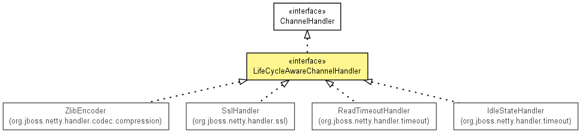

org.jboss.netty.channel
Interface LifeCycleAwareChannelHandler
- All Superinterfaces:
- ChannelHandler
- All Known Implementing Classes:
- IdleStateHandler, ReadTimeoutHandler, SslHandler, ZlibEncoder
public interface LifeCycleAwareChannelHandler
- extends ChannelHandler

A ChannelHandler that is notified when it is added to or removed
from a ChannelPipeline.
Calling ChannelHandlerContext.sendUpstream(ChannelEvent) or
ChannelHandlerContext.sendDownstream(ChannelEvent) in
beforeAdd(ChannelHandlerContext) or afterRemove(ChannelHandlerContext)
might lead to an unexpected behavior. It is because the context object
might not have been fully added to the pipeline or the context object is not
a part of the pipeline anymore respectively.
- Version:
- $Rev: 2080 $, $Date: 2010-01-26 18:04:19 +0900 (Tue, 26 Jan 2010) $
- Author:
- The Netty Project, Trustin Lee
beforeAdd
void beforeAdd(ChannelHandlerContext ctx)
throws Exception
- Throws:
Exception
afterAdd
void afterAdd(ChannelHandlerContext ctx)
throws Exception
- Throws:
Exception
beforeRemove
void beforeRemove(ChannelHandlerContext ctx)
throws Exception
- Throws:
Exception
afterRemove
void afterRemove(ChannelHandlerContext ctx)
throws Exception
- Throws:
Exception
Copyright © 2008-2011 JBoss, a division of Red Hat, Inc.. All Rights Reserved.